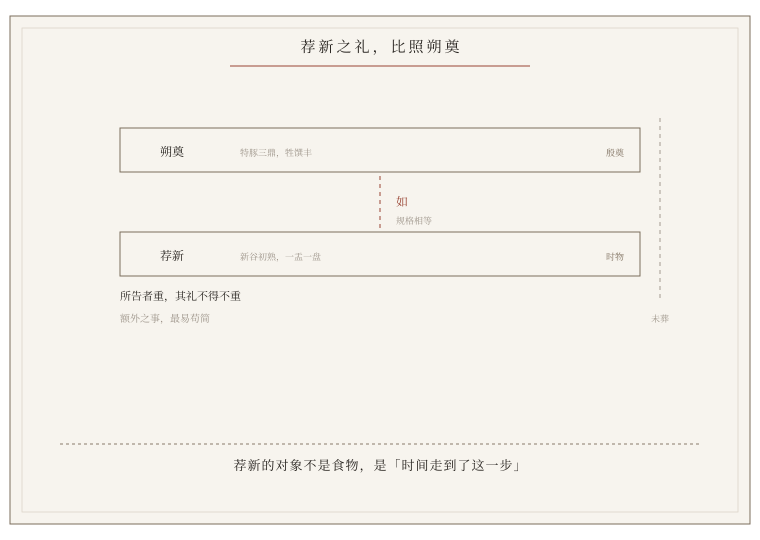

檀弓上 · 三·九十九 · 第 302 课
有荐新，如朔奠。
说什么事：未葬之时，若得到新出的时物，可以荐于死者，其礼如朔奠。
落在哪一层：荐新之礼。论「新味与常礼的等量」。
为何编在此位：上一课论变服之「不变」，此课论荐献之「如常」——两课皆言「不因事小而减其礼」。
【经】有薦新，如朔奠。
【注】重新物，為之殷奠。
【疏】「荐新」谓未葬中间得新味而荐亡者。「如朔奠」者，谓未葬前月朔大奠于殡宫者；大奠则牲馔丰也，朔礼视大敛，士则特豚三鼎。今若有新物及五谷始熟，荐于亡者，则其礼牲物如朔之奠也。大夫以上则朔望大奠，若士但朔而不望。
荐 进献。荐新，以时新之物进于死者。
新 新出之物。疏「得新味」，谓新熟之谷、新采之果、新杀之牲。
如 如同、比照。
朔奠 每月初一（朔）在殡宫设的大奠。
殷奠 注「为之殷奠」。殷，盛、大。殷奠谓牲馔丰盛之奠，与常奠相对。
特豚三鼎 士之朔奠用一豚三鼎。特，一；豚，小猪。
未葬之时，若得到新出之物，可以荐于死者，其礼如同朔奠。
此节讲的是一个日常处境里的例外。
未葬之前，死者尚未入土，仍在殡宫。这时若逢新谷初熟、新果初采，家人自然会想：要不要给父亲供一份？
礼的答复是：可以，但要用朔奠的规格。
注只四字「重新物，为之殷奠」——因为所重的是「新」，所以给它一个「盛」的礼。这个逻辑有点反直觉：新物本是最简的（新谷一盂、新果一盘），礼却要按最盛的朔奠来办。
疏把规格说清了：朔奠视大敛，士则特豚三鼎。也就是说，荐新不是随手添一碟，而是照月朔大奠的牲馔来办。
为什么？因为「新」在这套礼里有特殊地位。新者是时的开始：一年之新在春，一岁之新在秋，五谷之初熟是一年中最要紧的一次「新」。荐新，是把「时间走到了这一步」这件事告诉死者。既是报时，就不能草率——草率则不成其为报。
另一层：荐新是「额外」的。丧期本有常奠，荐新是常奠之外加的一次。额外之事最易苟简；礼家偏给它一个与朔奠同等的规格，正是防这个「额外就可以随便」。
第一层 「新」是一种时间标记 荐新的对象不是食物，是时节。新谷初熟，意味着一轮耕作完成、一年过了大半。把这件事告于殡宫，是让死者仍在这条时间线上。所以荐新的礼，重在「告」，不在「食」。
明乎此，则规格之盛可以理解：所告者重，故其礼不得不重。
第二层 「如」字的方法 礼书常用「如」字，建立一个等比关系：某事之礼，照某事办。这是一个极省的办法——不必为每一件小事另立一套仪节，只需指出它挂靠在哪一条已有的线上。荐新挂靠朔奠，遂有牲馔之数、陈设之位、行礼之节，一切照办。
「如」字也划了界：如朔奠，不是「过朔奠」。等同，不超越。
第三层 未葬与既葬之别 疏特别标出「未葬中间」。既葬之后，荐新自有人庙之礼（《月令》有「荐新」于寝庙），不在殡宫。此节的时限极明确：只在未葬这段。礼的每一条都有其时限，逾时则不适用——这是读礼书最易忽略的一层。
第四层 大夫与士之差 疏末一句：「大夫以上则朔望大奠，若士但朔而不望。」大夫以上每月朔、望两次大奠，士只有朔。故「如朔奠」一节，在士为每月一次之礼，在大夫以上则须分辨是朔是望。同一句经文，因爵等而所指不同。
与今日何干 今人逢时令、逢生日、逢忌日，为逝者供一碟果、一炷香。此节所立的规矩是：既然是「报时」，就别潦草。一件事被当成礼来做，它的分量就不由它的大小定，而由它所报的内容定。
| 左 | 右 |
|---|---|
| 有荐新 | 额外的献 |
| 未葬中间 | 时限 |
| 新味 | 所荐之物 |
| 如朔奠 | 所比之礼 |
| 殷奠 | 盛 |
| 特豚三鼎 | 士之数 |
| 朔望大奠 | 大夫以上 |
| 为报时 | 非为供食 |
画一处殡宫之内的陈设，视点平视略俯。画面中央偏左是一具停于西阶之上的柩，柩前设一案。案上并列三只鼎（两只小鼎居中、一只稍大在前），鼎旁置一只盛新谷的陶盂、一盘新果。案之右端另放一只空鼎（未盛物，作为对照），鼎盖半开。案前地上有跪坐者一人（背向观者、双手举盂）。不写文字、不画人面细节。赭色只用在盛新谷那只陶盂的边沿，与最前那只鼎的耳。
